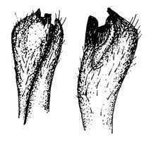
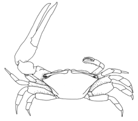
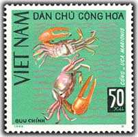

Fiddler Crabs
Uca vocans
Calling Fiddler Crab
Type
Information
Photos
Video
Art
References
Species List
Type Description
Cancer vocans
Linnaeus, C. (1758)
Systema Naturæ
. 10th Edition, Volume I.
Information
Subgenus
Gelasimus
Common Names
Calling Fiddler Crab
Synonyms, Alternate Spellings, & Name Forms
Cancer Vocans
,
Gelasima vocans
,
Gelasimus cultrimanus
,
Gelasimus cultrimanus
var.
marionis
,
Gelasimus Marionis
,
Gelasimus vocans
,
Gelasimus vocans
var.
cultrimanus
,
Gelasimus vocante
,
Gelasimus vocantis
,
Gonoplax vocans
,
Ocypoda vocans
,
Ocypode (Gelasimus) marionis
,
Ocypode vocans
,
Uca (Gelasimus) vocans
,
Uca (Thalassuca) vocans
,
Uca (Thalassuca) vocans vocans
,
Uca (Uca) vocans
,
Uca (Uca) vocans vocans
,
Uca cullrimana
,
Uca cultrimana
,
Uca cultrimanus
,
Uca Marionis
,
Uca marionis
forme
cultrimana
,
Uca marionis
subsp.
cultrimana
,
Uca marionis
var.
vocans
,
Uca vocans
,
Uca vocans vocans
Geographic Range
Indo-West Pacific: China, Burma, Thailand, Indonesia, Philippines, Malaysia
Download SVG line map of ranges.
Map data derived from:
Barnes (2010)
;
Crane (1975)
;
Frith & Frith (1978)
;
Huang
et al.
(1989)
;
Meziane
et al.
(2002)
;
Nakasone
et al.
(1983)
External Links
Encyclopedia of Life
Wikipedia
iNaturalist
NCBI Taxonomy Browser/Genbank
GBIF
Photos
Video
No videos available at this time.
Art



References
Adams, A., and A. White (1848) Crustacea. Pp. 1–66 in
The zoology of the voyage of H.M.S. "Samarang"; under the command of Captain Sir Edward Belcher, C.B., F.R.A.S., F.G.S., during the years 1843-1846
, A. Adams, ed., Volume 8. London: Reeve, Benham, & Reeve.
Alcock, A. (1900) Materials for a carcinological fauna of India No. 6. The Brachyura Catometopa, or Grapsoidea.
Journal of the Asiatic Society of Bengal
64(3. Part 2):279–456.
Altevogt, R. (1955) Some studies on two species of Indian fiddler crabs,
Uca marionis nitidus
(Dana) and
U. annulipes
(Latr.).
Journal of the Bombay Natural History Society
52:702–716.
Altevogt, R. (1969) Ein sexualethologischer Isolationsmechanismus bei sympatrischen
Uca
-Arten (Ocypodidae) des Ostpazifik.
forma et functio
1:238–249. {An ethological reproductive isolation mechanism in sympatric species of
Uca
(Ocypodidae) of the Eastern Pacific}
Altevogt, R. (1972) Physiological inter-relations of display and locomotion in fiddler crabs: An evolutionary aspect.
Journal of the Marine Biological Association of India
14(2):456–467.
Aoki, M., H. Imai, and K. Wada (2009) Newly recorded populations of
Uca arcuata
(Decapoda: Ocypodidae) in Okinawajima Island and their genetic structure.
Japanese Journal of Benthology
64:10–14.
Audouin, M.M.V. (1829)
Histoire Naturelle des Annélides, Crustacés, Arachnides et Myriapodes
, Volume 1. Paris: Bureau de l'Encyclopedie Portative.
Aurivillius, C.W.S. (1893) Die Beziehungen der Sinnesorgane amphibischer Decapoden zur Lebensweise und Athmung.
Nova Acta Regiæ Societatis Scientiarum Upsaliensis. Seriei 3
16(9):1–48.
Balss, H. (1922) Ostasiatische Decapoden. IV. Die Brachyrhynthen (Cancridea).
Archiv für Naturgeschicthe. Abteilung A
88(11):94–166.
Balss, H. (1938) Die Dekapoda Brachyura von Dr. Sixten Bocks' Pazifik-Expedition, 1917-1918.
Göteborgs Kungliga Vetenskaps-och Vitterhetssam-halles handlinger (5B)
5(7):1–85.
Barnard, K.H. (1950) Descriptive catalogue of South African decapod Crustacea.
Annals of the South African Museum
38:1–837.
Barnwell, F.H. (1980) Taxonomic differentiation within the
lactea
-complex of fiddler crabs in the Sunda Shelf region.
American Zoologist
20(4):957.
Barnwell, F.H. (1984) Tidal rhythms of locomotor activity in the fiddler crab
Uca vocans
from shores with semi-diurnal and predominantly diurnal.
American Zoologist
24(3):68A.
Beinlich, B., and H.-O. von Hagen (2006) Materials for a more stable subdivision of the genus
Uca
Leach.
Zoologische Mededelingen
80(4):9–32.
Boone, L. (1930) Scientific results of the cruises of the yachts "Eagle" and "Ara," 1921-1928, William K. Vanderbilt commanding. Crustacea: Stomatopoda and Brachyura.
Bulletin of the Vanderbilt Marine Museum
2:5–228.
Boone, L. (1934) Scientific results of the world cruise of the yacht "Alva", 1931, William K. VanderbiltPesta, Commanding. Crustacea: Stomatopoda and Brachyura.
Bulletin of the Vanderbilt Marine Museum
5:1–210.
Borradaile, L.A. (1900) On some crustaceans from the South Pacific.--Part IV. The crabs.
Proceedings of the Zoological Society of London
1900(3):568–596.
Bosc, L.A.G. (1802)
Histoire naturelle des crustacés, contenant leur description et leurs moeurs; avec figures dessinées d'après nature
, Volume 1. Paris: Deterville.
Bott, R. (1973) Die verwandtschaftlichen Beziehungen der
Uca
-Arten (Decapoda: Ocypodidae).
Senckenbergiana biologica
54(4–6):315–325.
Buitendijk, A.M. (1947) Zoological notes from Port Dickson, III Crustacea Anomura and Brachyura.
Zoologische Mededelingen
28:280–284.
Cano, G. (1889) Viaggio della R. Corvetta Vettor Pisani attorno al globo. — Crostácei Brachiuri ed Anomuri.
Bollettino della Società di Naturalisti in Napoli
3(2):169–268.
Chace, F.A., Jr. (1942) Scientific results of a fourth expedition to forested areas in Eastern Africa. III. Decapod Crustacea.
Bulletin of the Museum of Comparative Zoölogy at Harvard College
91(3):185–233.
Chhapgar, B.F. (1957) On the marine crabs (Decapoda: Brachyura) of Bombay State. Part II.
Journal of the Bombay Natural History Society
54(3):503–549.
Chopra, B., and K.N. Das (1937) Further notes on Crustacea Decapoda in the Indian Museum.
Records of the Indian Museum
39:377–434.
Coelho, P.A., and M.d.A. Ramos (1972) A constituiçāo e a distribuiçāo da fauna de decápodos do litoral leste da América do Sul entre en latitudes de 5° N e 39° S.
Trabalhos Oceanográficos da Universidade Federal de Pernambuco
13:133–236.
Crane, J. (1957) Basic patterns of display in fiddler crabs (Ocypodidae, Genus
Uca
).
Zoologica NY
42:69–82.
Crane, J. (1958) Aspects of social behavior in fiddler crabs, with special reference to
Uca maracoani
(Latreille).
Zoologica NY
43:113–130.
Crane, J. (1966) Combat, display and ritualization in fiddler crabs (Ocypodidae, genus
Uca
).
Philosophical Transactions of the Royal Society of London. Series B, Biological Sciences
251:459–472.
Crane, J. (1967) Combat and its ritualization in fiddler crabs (Ocypodidae) with special reference to
Uca rapax
(Smith).
Zoologica NY
52:49–77.
Crane, J. (1975)
Fiddler Crabs of the World: Ocypodidae: Genus Uca
. Princeton, NJ: Princeton University Press.
Crosnier, A. (1965) Crustacés décapodes. Grapsidae et Ocypodidae.
Faune de Madagascar
18:1–143.
Dana, J.D. (1852) Crustacea. Pp. 1–685 in
Untied States Exploring Expedition. During the years 1838, 1839, 1840, 1841, 1842. Under the Command of Charles Wilkes, U.S.N.
, Volume 13. Philadelphia: C. Sherman.
De Geer, C. (1778) Des Crabes. Pp. 409–432 in
Memoires pour servir a l'histoire des insectes
, Volume 7. Stockholm: Pierre Hesselberg.
de Haan, W. (1833–1850) Crustacea. Pp. 1–243 in
Fauna Japonica sive Descriptio animalium, quae in itinere per Japoniam, jussu et auspiciis superiorum, qui summum in India Batava Imperium tenent, suscepto, annis 1823-1830 collegit, notis, observationibus et adumbrationibus illustravit
, P.F. von Siebold, ed. Amsterdam: Lugduni Batavorum.
De Kay, J.E. (1844)
Zoology of New-York. Part VI. Crustacea
. Albany, New York: Carroll and Cook.
De Man, J.G. (1880) On some species of
Gelasimus
Latr. and
Macrophthalmus
Latr.
Notes from the Leyden Museum
2(2):67–72.
De Man, J.G. (1887) Bericht über die im indischen Archipel von Dr. J. Brock gesammelten Decapoden u. Stomatopoden.
Archiv für Naturgeschicthe
53(1):215–600.
De Man, J.G. (1887–1888) Report on the Podophthalmous Crustacea of the Mergui Archipelago, collected for the trustees of the Indian Museum, Calcutta, by Dr. John Anderson, F.R.S., superintendant of the museum.
Journal of the Linnean Society. Zoology
22:1–305.
De Man, J.G. (1891) Carcinological studies in the Leyden Museum. No. 5.
Notes from the Leyden Museum
13(1):1–61.
De Man, J.G. (1892) Decapoda des indischen Archipels. Pp. 265–527 in
Zoologische Ergebnisse einer Reise in Niederlandisch Ost-Indien
, M. Weber, ed., Volume 2. Leiden: Brill.
De Man, J.G. (1895) Bericht über die von Herrn Schiffscapitän Storm zu Atjeh, an den westlichen Küsten von Malakka, Borneo und Celebes sowie in der Java-See gesammelten Decapoden und Stomatopoden.
Zoologische Jahrbücher. Abtheilung für Systematik, Geographie und Biologie der Thiere
8(4):485–609.
De Man, J.G. (1902) Die von Herrn Professor Kükenthal im Indischen Archipel gesammelten Dekapoden und Stomatopoden.
Abhandlungen der Senckenbergischen Naturforschenden Gesellschaft
25:467–929.
De Man, J.G. (1902) Over de Crustacea ("Weeke Schaalvisschen") in Rumphius' Rariteitkamer. Pp. 98–104 in
Rumphius Gedenkboek: 1702-1902
: Koloniaal Museum te Haarlem.
Desmarest, A.-G. (1823) Malacostracés,
Malacostraca.
(Crust.). Pp. 138–425 [Malacostracés 211–285] in
Dictionnaire des Sciences Naturelles, dans lequel on trait Méthodiquement des Différens étres de la Nature, considérés soit en eux-mêmes, d’après l’état actuel de nos connoissances, soit relativement a l’utilité qu’en peuvent retirer la Médecine, l’Agriculture, le Commerce et les Arts. Suivi d’une biographie des plus Célèbres Naturalistes. Ouvrage destiné aux médecins, aux agriculteurs, aux commerçans, aux artistes, aux manufacturiers, et à tous ceux qui ont intérêt à connoître les productions de la nature, leurs caractères génériques et spécifiques, leur lieu natal, leurs propiétés et leurs usages
, F. Cuvier, ed., Volume 28. Strasbourg et Paris: F.G. Levrault et Le Normant.
Desmarest, A.-G. (1825)
Considérations Générales sur la Classe des Crustacés, et description des espèces de ces animaux, qui vivent dans la mer, sur les côtes, ou dans les eaux douces de la France
. Paris: F. J. Levrault.
Doflein, F. (1899) Amerikanische Dekapoden der k. bayerischen Staatssammlungen.
Sitzungsberichte der Königlichen Bayerischen Akademie der Wissenschaften zu München
29:177–195.
Doflein, F. (1904) Brachyura. Pp. 1–314 in
Wissenschaftliche Ergebnisse der Deutschen Tiefsee-Expedition auf dem Dampfer "Valdivia" 1898-1899
, C. Chun, ed., Volume 6
Estampador, E.P. (1937) A check list of Philippine crustacean decapods.
Philippine Journal of Science
62(4):465–559.
Estampador, E.P. (1959) Revised check list of Philippine crustacean decapods.
Natural & Applied Sci. Bull. Coll. Liberal Arts, Univ. of Philippines
17(1):100–103.
Eydoux, F. (1835) Nouvelle espèce de Gélasime.
Magasin de Zoologie
5(7):29–32.
Fabricius, J.C. (1775)
Systema entomologiae: sistens insectorum classes, ordines, genera, species, adiectis synonymis, locis, descriptionibvs, observationibvs
: Flensburgi et Lipsiae in Officina Libraria Kortii.
Fabricius, J.C. (1781)
Species Insectorum Exhibentes eorum differentias specificas, synonyma auctorum, loca natalia, metamorphosin, adjectis observationibus, descriptionibus
, Volume 1. Hamburg: Carol Ernest.
Fabricius, J.C. (1787)
Mantissa Insectorum sistens eorum species nuper detectas adiectis characteribus genericis, differentiis specificis, emendationibus, observationibus
, Volume I: Hafniae.
Fabricius, J.C. (1798)
Entomologia systematica emendata et aucta
, Volume II. Hafniae: Christ. Gottl. Proft.
Fabricius, J.C. (1798)
Supplementum entomologiae systematicae
. Hafniae: Proft et Storch.
Faxon, W. (1895) Reports on an exploration off the west coasts of Mexico, Central and South America, and off the Galapagos Islands, in charge of Alexander Agassiz, by the U.S. Fish Commission steamer “Albatross,” during 1891, Lieut.-Commander Z.L. Tanner, U.S.N. commanding. XV. The stalk-eyed Crustacea.
Memoirs of the Museum of Comparative Zoölogy at Harvard College
18:1–292.
Fowler, H.W. (1912) The Crustacea of New Jersey. Pp. 29–650 in
Annual Report of the New Jersey State Museum 1911
. Trenton, N.J.: MacCrellish & Quigley.
Frith, D.W. (1977) A preliminary list of macrofauna from a mangrove forest and adjacent biotopes at Surin Island, Western Peninsular Thailand.
Phuket Marine Biological Center Research Bulletin
17:1–14.
Frith, D.W., and C.B. Frith (1977) Observations on fiddler crabs (Ocypodidae: genus
Uca
) on Surin Island, Western Peninsular Thailand, with particular reference to
Uca tetragonon
(Herbst).
Phuket Marine Biological Center Research Bulletin
18:1–14.
Frith, D.W., and C.B. Frith (1977) Range extensions of fiddler crabs (Decapoda, Brachyura, Ocypodidae) in the north-western Malay Peninsula area.
Crustaceana
32(1):100–102.
Frith, D.W., R. Tantanasiriwong, and O. Bhatia (1976) Zonation and abundance of macrofauna on a mangrove shore, Phuket Island.
Phuket Marine Biological Center Research Bulletin
10:1–37.
George, R.W., and D.S. Jones (1982) A revision of the fiddler crabs of Australia (Ocypodinae
: Uca
).
Record of the Western Australian Museum Supplement
14:1–99.
Gilchrist, S.L. (1988) Natural histories of selected terrestrial crabs. Pp. 382–390 in
Biology of the Land Crabs
, W.W. Burggren and B.R. McMahon, eds. Cambridge: Cambridge University Press.
Gmitter, T.E., and R.M. Wotton (1953) Crabs from the island of St. Thomas.
Proceedings of the Pennsylvania Academy of Science
27:261–272.
Gould, A.A. (1841)
A report on the invertebra of Massachusetts, comprising the Mollusca, Crustacea, Annelida, and Radiata
. Cambridge, Massachusetts: Folsom, Wells, and Thurston.
Green, J.P., and J. Schochet (1991) Cluster analysis of molt classes in the fiddler crab
Uca vocans
.
American Zoologist
31(5):3A.
Gronovius, J.F. (1764)
Zoophylacii Gronoviani Fasciulus Secondus exhibens Enumerationem Insectorum, quae in Museo suo adservat, examini subjecit, systematice disposuit atque descripsit
: Lugduni Batavorum.
Gundlach, J. (1887) Apuntes para la fauna Puerto-Riqueñia. VI. Crustáceos.
Anales de la Sociedad Española de Historia Natural
16(1):115–199.
Hartnoll, R.G. (1975) The Grapsidae and Ocypodidae (Decapoda: Brachyura) of Tanzania.
Journal of Zoology
177(3):305–328.
Hartnoll, R.G. (1982) Growth. Pp. 111–196 in
The Biology of Crustacea, Volume 2: Embryology, Morphology, and Genetics
, L.G. Abele, ed., Volume 2. New York: Academic Press.
Hartnoll, R.G. (1988) Evolution, systematics, and geographical distribution. Pp. 6–54 in
Biology of the Land Crabs
, W.W. Burggren and B.R. McMahon, eds. Cambridge: Cambridge University Press.
Haswell, W.A. (1882)
Catalogue of the Australian stalk-eyed and sessile-eyed Crustacea
. Sydney.
Hay, W.P., and C.A. Shore (1915–1916) The decapod crustaceans of Beaufort, N. C., and the surrounding region.
Bulletin of the United States Bureau of Fisheries
35:369–475.
Heller, C. (1865) Die Crustaceen. Pp. 1–280 in
Reise der österreichischen Fregatte "Novara" um die Erde in den Jahren 1857-1859 unter den Befehlen des Commodore B. von Wüllerstorf-Urbair. Zoology
, Volume 2. Vienna
Henderson, J.R. (1893) A contribution to Indian carcinology.
Transactions of the Linnean Society of London. Second Series. Zoology
5(10):325–458.
Henschel, A.W.E.T. (1833)
Vita G. E. Rumphii, Plinii Indici. Accedunt Specimen Materiae Rumphianae Medicae Calvisque Herbarii et Thesauri Amboinensis
. Vratislaviae.
Herbst, J.F.W. (1782)
Versuch einer Naturgeschichte der Krabben und Krebse. Nebst einer systematischen Beschreibung ihrer verschiedenen Arten
, Volume 1, no. 1. Zurich: J. C. Fuessly.
Herbst, J.F.W. (1790)
Versuch einer Naturgeschichte der Krabben und Krebse. Nebst einer systematischen Beschreibung ihrer verschiedenen Arten
, Volume Atlas. Zurich: J. C. Fuessly.
Herbst, J.F.W. (1799)
Versuch einer Naturgeschichte der Krabben und Krebse. Nebst einer systematischen Beschreibung ihrer verschiedenen Arten
, Volume 3, no. 1. Zurich: J. C. Fuessly.
Herbst, J.F.W. (1804)
Versuch einer Naturgeschichte der Krabben und Krebse. Nebst einer systematischen Beschreibung ihrer verschiedenen Arten
, Volume 3, no. 4. Zurich: J. C. Fuessly.
Herklots, J.A. (1861) Symbolae Carcinologicae. I. Catalogue des Crustacés qui ont servi de base au système Carcinologique de M. W. de Haan, rédigé d'après la collection du Musée des PayBas et les Crustacés de la Faune du Japon.
Tijdschrift voor entomologie
4:116–156.
Hilgendorf, F. (1869) Crustaceen. Pp. 69–116,147 in
Reisen in Ost-Afrika
, V.D. Decken, ed., Volume 3
Hoffmann, C.K. (1874)
Crustacea
, Volume Part 5, livr. 2. Leyden.
Holmes, S.J. (1900) Synopsis of California stalk-eyes Crustacea.
Occasional Papers of the California Academy of Sciences
7:1–262.
Holmes, S.J. (1904) On some new or imperfectly known species of West American Crustacea.
Proceedings of the California Academy of Sciences. Third Series. Zoology
3(12):307–331.
Holthuis, L.B. (1959) The crustacea Decapoda of Suriname (Dutch Guiana).
Zoologische Verhandelingen
44(2):1–296.
Holthuis, L.B. (1959) Notes on Pre-Linnean Carcinology (including the study of Xiphosura) of the Malay Archipelago. Pp. 63–125 in
Rumphius Memorial Volume
, H.C.D. Wit, ed. Baarn, Netherlands: Hollandia.
Holthuis, L.B. (1967) On a new species of
Uca
from the West Indian region (Crustacea, Brachyura, Ocypodidae).
Zoologische Mededelingen
42(6):51–54.
Holthuis, L.B. (1967) Schaaldieren (Crustacea) afgebeeld op Postzegels.
Zoologische Bijdragen
8:1–21.
Irie, M., A. Kawachi, T. Ishigami, and T. Ishikawa (2005) Study on habitat and territorial competition of crabs which range on Amparu Tidal Lagoon.
Environmental Systems Research Papers
33:55–62. {入江光輝, 河内敦, 石神卓美 and 石川忠晴} {石垣島アンパル干潟に優占して生息する数種類の力二の生息環境について}
Jones, H.G. (1968) Preliminary studies on the brachyuran Crustacea of Barbados. II.
Journal of the Barbados Museum and Historical Society
32:187–189.
Kingsley, J.S. (1880) Carcinological notes, No. II.-Revision of the Gelasimi.
Proceedings of the Academy of Natural Sciences of Philadelphia
1880(1):135–155.
Koelbel, K. (1898) Beschreibung der Krebse. Pp. 565–579 in
Wissenschaftliche ergebnisse der reise des grafen Béla Széchenyi in Ostasien 1870-1880
, Volume 2. Vienna
Lamarck, J.B.P.A.d. (1801)
Systême des Animaux Sans Vertèbres
. Paris: Deterville.
Lamarck, J.B.P.A.d. (1818)
Histoire Naturelle des Animaux sans Vertèbres
, Volume V. Paris: Deterville.
Lamarck, J.B.P.A.d. (1838)
Histoire Naturelle des Animaux sans Vertèbres
. Tenth edition Edition, Volume V. Paris: J. B. Baillière.
Lanchester, W.F. (1900) On a collection of crustaceans made at Singapore and Malacca.--Part I. Crustacea Brachyura.
Proceedings of the Zoological Society of London
1900(3):719–770.
Latreille, P.A. (1802–1803)
Histoire naturelle, générale et particulière des crustacés et des insectes: ouvrage faisant suite aux oeuvres de Leclerc de Buffon, et partie du cours complet d'histoire naturelle rédigé par C. S. Sonnini
, Volume VI. Paris.
Latreille, P.A. (1806)
Genera Crustaceorum et Insectorum
, Volume 1. Paris: Amand Konig.
Latreille, P.A. (1817) Gélasime,
Gelasimus
(Buffon). Pp. 517–520 in
Nouveau dictionnaire d'histoire naturelle, appliquée aux arts, à l'Agriculture, à l'économie rurale et domestique, à l'médecine, etc. Par une société de naturalistes et d'agriculteurs
, Volume XII. Paris: Deterville.
Latreille, P.A. (1828) Les Crustaces, les Arachnides et les Insectes. Pp. in
Le Règne Animal Distribué d'après son organisation, pour servir de base a l'histoire naturelle des animaux et d'introduction a l'anatomie comparée (2nd edition)
, G. Cuvier, ed., Volume 4. Paris: Deterville.
Latreille, P.A. (1829)
Les Crustcacès, les Arachnides et les Insectes, distribues en Familles Naturelles
, Volume 1. Paris: Deterville.
Laurie, R.D. (1906) Report on the Brachyura collected by Professor Herdman at Ceylon in 1902.
Report to the Government of Ceylon on the Pearl Oyster Fisheries of the Gulf of Manaar
5:349–432.
Laurie, R.D. (1915) Reports on the marine biology of the Sudanese Red Sea.—XXI. On the Brachyura.
Journal of the Linnean Society. Zoology
31:407–475.
Leach, W.E. (1814) Crustaceology. Pp. 383–437 in
The Edinburgh Encyclopædia
, D. Brewster, ed., Volume 7. Edinburgh: William Blackwood.
Leach, W.E. (1832) Crustaceology. Pp. 221–277 in
The Edinburgh Encyclopedia
, D. Brewster, ed., Volume VII. Philadelphia: Joseph and Edward Parker.
Lenz, H. (1910) Crustaceen von Madagaskar, Ostafrika und Ceylon. Pp. 539–576 in
Reise in Ostafrkia in den Jahren 1903-1905
, A. Voeltzkow, ed., Volume 2. Stuttgart
Lewinsohn, C. (1977) Die Ocypodidae des Roten Meeres (Crustacea Decapoda, Brachyura).
Zoologische Verhandelingen
152:45–84.
Linnaeus, C. (1758)
Systema Naturæ
. 10th Edition, Volume I.
Linnaeus, C. (1763) Centuria insectorum.
Amoenitates Academicæ
6:384–415.
Linnaeus, C. (1766)
Systema Naturæ
. 12th Edition, Volume I: Holmiæ.
Lundoer, S. (1974) A checklist of the Brachyura in the reference collection at PMBC, Thailand.
Phuket Marine Biological Center Research Bulletin
4:1–11.
Maccagno, T. (1928) Crostacei Decapodi. Le specie del genere
Uca
Leach conservate nel Regio Museo Zoologico di Torino.
Bollettino dei Musei di Zoologia ed Anatomia comparata della R. Università di Torino
41(11):1–52.
Macnae, W. (1966) Mangroves in eastern and southern Australia.
Australian Journal of Botany
14(1):67–104.
Macnae, W. (1968) A general account of the fauna and flora of mangrove swamps and forests in the Indo-West-Pacific region. Pp. 73–270 in
Advances in Marine Biology
, F.S. Russell and M. Yonge, eds., Volume 6. London: Academic Press.
McNeill, F.A. (1920) Studies in Australian carcinology. No. 1.
Records of the Australian Museum
13:105–109.
Miers, E.J. (1879) An account of the Petrological, Botanical, and Zoological collections made in Kerguelen's Land and Rodriguez during the Transit of Venus Expeditions, carried out by order of Her Majesty's Government in the years 1874-75. Crustacea.
Philosophical Transactions of the Royal Society of London
168:485–496.
Miers, E.J. (1880) On a collection of Crustacea from the Malaysian Region.--Part II. Telphusidea, Catometopa, and Oxystomata.
Annals and Magazine of Natural History, Series V
5:304–317.
Miers, E.J. (1886) Report on the Brachyura collected by H.M.S. Challenger during the years 1873-76. Pp. 1–362 in
H.M.S. Challenger Reports
, Volume XVII. London
Milne Edwards, H. (1837)
Historie naturelle des crustaces comprenant l-anatomie, la physiologie et las classification des ces animaux
, Volume 2. Paris.
Milne Edwards, H. (1837) Les Crustaces. Pp. 278 in
Le Regne animal distribue d'apres son organisation
, G. Cuvier, ed., Volume XVII. Paris
Milne Edwards, H. (1852) Observations sur les affinités zoologiques et la classification naturelle des crustacés.
Annales des Sciences Naturelles. Zoologie (Série 3)
18:109–166.
Milne Edwards, H. (1854)
Mélanges carcinologiques
. Paris: L. Martinet.
Milne-Edwards, A. (1873) Recherches sur la faune carcinologique de la Nouvelle-Caledonie.
Nouvelles Archives de Muséum d'Historie Naturelle de Paris
9(2):156–332.
Miyake, S. (1936) Reports on the Brachyura of Riukiu Islands collected by the Yaéyama expeditions during the years 1932-34. II. A list of the known species of the Brachyura from Ishigaki-shima.
Annotationes Zoologicae Japonenses
15(4):506–513.
Miyake, S. (1939) Notes on Crustacea Brachyura colleced by Professor Teiso Esaki's Micronesia Expeditions 1937-1938 together with a check list of Micronesian Brachyura.
Records of Oceanographic Works in Japan
10(2):168–247.
Naderloo, R., M. Türkay, and H.-L. Chen (2010) Taxonomic revision of the wide-front fiddler crabs of the
Uca lactea
group (Crustacea: Decapoda: Brachyura: Ocypodidae) in the Indo-West Pacific.
Zootaxa
2500:1–38.
Neumann, R. (1878) Systematische Uebersicht der Gattungen der Oxyrhynchen. Catalog der podophthalmen Crustaceen des Heidelberger Museums. Beschreibung einiger neuer Arten. Pp. 1–39: Leipzig).
Nobili, G. (1897) Decapodi e Stomatopodi raccolti dal Dr. Enrico Festa nel Darien, a Curaçâo, La Guayra, Porto Cabello, Colon, Panama, ecc.
Bollettino dei Musei di Zoologia ed Anatomia comparata della R. Università di Torino
12(280):1–8.
Nobili, G. (1899) Contribuzioni alla conoscenza della fauna carcinologica della Papuasia, delle Molucche e dell' Australia.
Annali del Museo Civico di Storia Naturale di Genova (Serie 2a, Vol. XX)
40:230–282.
Nobili, G. (1899) Decapodi e stomatopodi Indo-Malesi.
Annali del Museo Civico di Storia Naturale di Genova (Serie 2a, Vol. XX)
40:473–523.
Nobili, G. (1903) Contributo alla fauna carcinologica di Borneo.
Bollettino dei Musei di Zoologia ed Anatomia comparata della R. Università di Torino
18(447):1–32.
Nobili, G. (1906) Faune carcinologique de la Mer Rouge. Décapodes et Stomatopodes.
Annales des Sciences Naturelles. Zoologie (Série 9)
4:1–347.
Nobili, G. (1907) Ricerche sui crostacei della Polinesia. Decapodi, stomatopodi, anisopodi, e isopodi.
Memorie della reale Accademia delle scienze di Torino, ser 2
57:351–430.
Oliveira, L.P.H.d. (1939) Contribuição ao conhecimento dos crustaceos do Rio de Janeiro. Genero
Uca
(Decapoda: Ocypodidae).
Memórias do Instituto Oswaldo Cruz
34(1):115–148.
Olivi, G. (1792)
Zoologia Adriatica
: Bassano.
Olivier, M. (1811)
Encyclopedie methodique. Histoire naturelle. Insectes.
, Volume VIII. Paris: H. Agasse.
Olivier, M. (1811)
Encyclopedie methodique. Histoire naturelle. Insectes.
, Volume VI. Paris: H. Agasse.
Ortmann, A.E. (1894) Crustaceen. Pp. 1–80 in
Zoologische Forschungsreisen in Australien und dem malayischen Archipel
, R. Semon, ed., Volume V: Denkschr. med.-naturw. Ges. Jena.
Ortmann, A.E. (1894) Die Decapoden-Krebse des Strassburger Museums, mit besonderer Berücksichtigung der von Herrn Dr. Döderlein bei Japan und bei den Liu-Kiu-Inseln gesammelten und zur Zeit im Strassburger Museum aufbewahrten Formen. VIII. Abtheilung: Brachyura (Brachyura genuina Boas) III. Unterabtheilung: Cancroidea, 2. Section: Canerinea, 2. Gruppe: Catametopa.
Zoologische Jahrbücher. Abtheilung für Systematik, Geographie und Biologie der Thiere
7(5):683–772.
Ortmann, A.E. (1897) Carcinologische Studien.
Zoologische Jahrbücher. Abtheilung für Systematik, Geographie und Biologie der Thiere
10(3):258–372.
Parisi, B. (1918) I Decapodi giapponesi del Museo di Milano. VI. Catumetopa e Paguridea.
Atti della Società Italiana di Scienze Naturali, e del Museo Ciivico di Storia Naturale in Milano
57:90–115.
Pearse, A.S. (1912) The habits of fiddler-crabs.
Philippine Journal of Science
7D(3):113–133.
Pesta, O. (1913) Decapoda Brachyura aus Samoa.
Denkschriften der Kaiserlichen Akademie der Wissenschaften
88:36–65.
Petiver, J. (1713)
Aquatilium Animalium Amboinæ, &c. Icones & Nomina
. London: Christopher Bateman.
Pillai, N.K. (1951) Decapoda (
Brachyura
) from Travancore.
Bulletin of the Central Research Institute, University of Travancore, Trivandrum
2, series C(1):1–46.
Powers, L.W. (1975) The Fiddler Crab Burrow: A Study in Behavioral Ecology. Pp. 213 (Austin, Texas: University of Texas at Austin).
Powers, L.W., and J.F. Cole (1976) Temperature variation in fiddler crab microhabitats.
Journal of Experimental Marine Biology and Ecology
21(2):141–157.
Przibram, H. (1905) Die "Heterochelie" bei decapoden Crustaceen (zugleich: Experimentelle Studien über Regeneration. Dritte Mitteilung).
Archiv für Entwicklungsmechanik der Organismen
19(2):181–247.
Raben, K.v. (1934) Veränderungen im Kiemendeckel und in den Kiemen einiger Brachyuren (Decapoden) im Verlauf der Anpassung an die Feuchtluftatmung.
Zeitschrift fur Wissenschaftliche Zoologie
145:425–461.
Rankin, W.M. (1898) The Northrop collection of Crustacea from the Bahamas.
Annals of the New York Academy of Sciences
11(12):225–258.
Rathbun, M.J. (1910) Decapod crustaceans collected in Dutch East India and elsewhere by Mr. Thomas Barbour in 1906-1907.
Bulletin of the Museum of Comparative Zoölogy at Harvard College
52(16):305–317.
Rathbun, M.J. (1911) The stalk-eyed Crustacea of Peru and the adjacent coast.
Proceedings of the United States National Museum
38(1766):531–620.
Rathbun, M.J. (1918) The grapsoid crabs of America.
United States National Museum Bulletin
97:1–461.
Richters, E. (1880) Decapoda. Pp. 139–178 in
Beitrage zur Meeresfauna der Insel Mauritius und der Seychellen
, K. Mobius, E. Richters and E. von Martens, eds. Berlin: Gutmannschen.
Rumphius, G.E. (1705)
D'Amboinsche rariteitkamer, behelzende eene beschryvinge van allerhande zoo weeke als harde schaalvisschen, te weeten raare krabben, kreeften, en diergelyke Zeedieren, als mede allerhande hoorntjes en schulpen, die men in d'Amboinsche Zee vindt: Daar beneven zommige mineraalen, gesteenten, en soorten van aarde, die in d'Amboinsche, en zommige omleggende Eilanden gevonden worden
. Amsterdam: François Halma.
Rumphius, G.E. (1711)
Thesaurus Imaginum Piscium Testaceorum; Quales sunt Cancri, Echini, Echinometra, Stellæ Marinæ, &c. Ut & Cochlearum; Inter quas numerantur Lunares; Laciniatæ; Trochi; Valvatæ; sive Semilunares; Valvatæ striatæ; Cassides tuberosæ, verrucosæ, læves & Murices; Globosæ; Buccina; Strombi; Volutæ; Alatæ; Porcellanæ majores & minores; Cylindri; &c. Quibus accedunt Conchylia, Ut Nautilus, Cornu Ammonis, &c. Conchæ univalviæ & bivalviæ; Quarum species sunt Solenes univalvii, Chamæ asperæ, Chamæ læves, Pectines, Pectunculi, Tellinæ Solenes bivalvii, Musculi, Pinnæ, Ostrea, &c. Denique Mineralia; Uti Metalla, Lapides & Argillæ, variis in locis reperta. Quroum omnium maximam artem Georgius Everhardus Rumphius M. D. Et Academiæ Ceseræ Naturæ Curiosurum Collega, dictus Plinius Indicus, collegit; Jam vero Naturæ Amator & Curiosus quidam in hunc ordinem digessit, & nitidissime æri indici curavit
: Lubduni Batavorum.
Rumphius, G.E. (1740)
D'Amboinsche rariteitkamer, behelzende eene beschryvinge van allerhande zoo weeke als harde schaalvisschen, te weete raare krabben, kreeften, en diergelyke Zeedieren, als mede allerhande hoorntjes en schulpen, die men in d'Amboinsche Zee vindt: Daar benevens zommige mineraalen, gesteenten, en soorten van aarde, die in d'Amboinsche, en zommige omleggende Eilanden gevonden worden (2nd edition)
. Amsterdam: Jan Roman de Jonge.
Rumphius, G.E. (1741)
D'Amboinsche rariteitkamer, behelzende eene beschryvinge van allerhande zoo weeke als harde schaalvisschen, te weete raare krabben, kreeften, en diergelyke Zeedieren, als mede allerhande hoorntjes en schulpen, die men in d'Amboinsche Zee vindt: Daar benevens zommige mineraalen, gesteenten, en soorten van aarde, die in d'Amboinsche, en zommige omleggende Eilanden gevonden worden (3rd edition)
. Amsterdam: Jan Roman de Jonge.
Sakai, T. (1934) Brachyura from the coast of Kyusyu, Japan.
Science Reports of the Tokyo Bunrika Daigaku
1B(25):281–330.
Sakai, T. (1936) Report on the Brachyura collected by Mr. F. Hiro at Palao Islands.
Science Reports of the Tokyo Bunrika Daigaku
2B:155–177.
Sakai, T. (1940) Bio-geographic review on the distribution of crabs in Japanese waters.
Records of Oceanographic Works in Japan
11(1):27–63.
Sakai, T. (1976) Notes from the carcinological fauna of Japan (6).
Researches on Crustacea
7:29–40.
Salmon, M. (1965) Waving display and sound production in the courtship behavior of
Uca pugilator
, with comparisons to
U. minax
and
U. pugnax
.
Zoologica NY
50:123–150.
Sankarankutty, C. (1961) On Decapoda Brachyura from the Andaman and Nicobar Islands. 1. Families Portunidae, Ocypodidae, Grapsidae and Mictyridae.
Journal of the Marine Biological Association of India
3(1–2):101–119.
Say, T. (1817–1818) An account of the Crustacea of the United States.
Journal of the Academy of Natural Sciences in Philadelphia (Series 1)
1(1–2):57–63,65-80,97-101,155-169,235-253,313-319,374-401,423-458.
Schäfer, W. (1954) Form und Funktion der Brachyuren-Schere.
Abhandlungen der Senckenbergischen Naturforschenden Gesellschaft
489:1–65.
Schöne, H. (1961) Complex behavior. Pp. 465–520 in
The Physiology of Crustacea
, T.H. Waterman, ed., Volume 2. New York: Academic Press.
Schramm, A. (1867) Crustaces de la Guadeloupe d'apres un manuscrit du Docteur Isis Desbonne compare avec les echantillons de crustaces de sa collection et les derniers purblications de MM. Henri de Saussure et William Stimpson. Premiere partie, brachyures. Pp. 60, I. Desbonne, ed. Basseterre: Impreimerie du gouvernement.
Serène, R. (1973) The names of the forms of
Uca vocans
(Linnaeus) (Decapoda, Ocypodidae).
Crustaceana
24(3):337–339.
Serène, R. (1973) Notes sur quelques especes de brachyoures de Nouvelle-Caledonie.
Cahiers du Pacifique
17:119–161.
Shaw, S.R., and S. Stowe (1982) Photoreception. Pp. 291–367 in
The Biology of Crustacea, Volume 3: Neurobiology: Structure and Function
, H.L. Atwood and D.C. Sandeman, eds., Volume 3. New York: Academic Press.
Shen, C.-J. (1940) The brachyuran fauna of Hong Kong.
Journal of the Hong Kong Fisheries Research Station
1(2):211–242.
Shen, C.-J. (1940) On the collections of crabs of South China.
Bulletin of the Fan Memorial Institute of Biology
10(2):69–104.
Shih, H.-T., T. Naruse, and P.K.L. Ng (2010)
Uca jocelynae
sp. nov., a new species of fiddler crab (Crustacea: Brachyura: Ocypodidae) from the Western Pacific.
Zootaxa
2337:47–62.
Smith, S.I. (1870) Notes on American Crustacea. No. 1. Ocypodoidea.
Transactions of the Connecticut Academy of Arts and Science
2:113–176.
Statius Müller, P.L. (1775)
Des Ritters Carl von Linné Königlich Schwedischen Leibarztes &c. &c. vollständiges Natursystem nach der zwölften lateinischen Ausgabe und nach Anleitung des holländischen Houttuynischen Werks mit einer ausführlichen Erklärung
, Volume 5, part 2. Nürnberg: Gabriel Nicolaus Raspe.
Stebbing, T.R.R. (1921) Some Crustacea of Natal.
Annals of the Durban Museum
3:12–26.
Stimpson, W. (1858) Prodromus descriptionis animalium evertebratorum quæ in Expeditione ad Oceanum Pacificum Septentrionalem, a Republica Federata missa, Cadwaladaro Ringgold et Johanne Rodgers Ducibus, observavit et descripsit. Pars. V. Crustacea Ocypodoidea.
Proceedings of the Academy of Natural Sciences of Philadelphia
10:93–110.
Stimpson, W. (1859) Notes on North American Crustacea, No. 1.
Annals of the Lyceum of Natural History of New York
7:49–93.
Stimpson, W. (1907) Report on the Crustacea (Brachyura and Anomura) collected by the North Pacific Exploring Expedition, 1853-1856 (with introductory note, and edited by Mary J. Rathbun).
Smithsonian Miscellaneous Collections
49(1717):1–240.
Takahasi, S. (1935) Ecological notes on the ocypodian crabs (Ocypodidæ) in Formosa, Japan.
Annotationes Zoologicae Japonenses
15(1):78–87.
Tesch, J.J. (1918) Decapoda F. Hymenosomidae, Retroplumidae, Ocypodidae, Grapsidae and Gecarcinidae. Pp. 1–148 in
Siboga Expeditie
, Volume 82, Monograph 39c. Leiden: E. J. Brill.
Thallwitz, J. (1891) Decapoden-Studien, insbesondere basirt auf A. B. Meyer's Sammlungen im ostindischen Archipel, nebst einer Aufzählung der Decapoden und Stomatopoden des Dresdener Museums.
Abhandlungen und Berichte des Koeniglichen Zoologischen und Anthropologisch- Ethnographischen Museums zu Dresden
3(3):1–55.
Tweedie, M.W.F. (1937) On the crabs of the family Ocypodidae in the collection of the Raffles Museum.
Bulletin of the Raffles Museum
13:140–170.
Tweedie, M.W.F. (1950) Grapsoid crabs from Labuan and Sarawak.
Sarawak Museum Journal
5(2):338–369.
Verwey, J. (1930) Einges über die Biologie Ost-Indischer Mangrovekrabben.
Treubia
12:167–261.
Vohra, F.C. (1971) Zonation on a tropical sandy shore.
Journal of Animal Ecology
40(3):679–708.
von Hagen, H.-O. (1968) Studien an peruanischen Winkerkrabben (
Uca
).
Zoologische Jahrbücher. Abteilung für Systematik, Ökologie und Geographie der Tiere
95(2):395–468. {Studies of Peruvian fiddler-crabs (
Uca
)}
von Hagen, H.-O. (1970) Zur Deutung langstielger und gehörnter Augen bei Ocypodiden (Decapoda, Brachyura).
forma et functio
2:13–57. {On the significance of elongated and horned eyes in Ocypodid crabs}
von Hagen, H.-O. (1976) (Book Review) Jocelyn Crane, Fiddler Crabs of the World. Ocypodidae: Genus
Uca
.
Crustaceana
31(2):221–224.
von Martens, E. (1868) Ueber einige ostasiatische Süsswasserthiere.
Archiv für Naturgeschichte
34(1):1–64.
von Martens, E. (1869) Sudbrasilische Süss-und Brackwasser-Crustaceen nach den Sammlungen des Dr. Reinh. Henesel.
Archiv für Naturgeschicthe
35(1):1–37.
von Martens, E. (1872) Ueber Cubanische Crustaceen nach den Sammlungen Dr. J. Gudlach's.
Archiv für Naturgeschicthe
38(1):77–147.
Walker, A.O. (1887) Notes on a collection of Crustacea from Singapore.
Journal of the Linnean Society. Zoology
20(118):107–117.
Ward, M. (1941) New Brachyura from the Gulf of Davao, Mindanao, Philippine Islands.
American Museum Novitates
1104:1–15.
White, A. (1847)
List of the specimens of Crustacea in the collection of the British Museum
. London: Edward Newman.
Yamaguchi, T. (1971) Courtship behavior of a fiddler crab,
Uca lactea
.
Kumamoto Journal of Science: Biology
10(1):13–37.
Yamaguchi, T., and M. Takeda (1973) Dimorphism of chelipeds and systematic status of a fiddler crab,
Uca marionis
(Desmarest).
Proceedings of the Japanese Society of Systematic Zoology
9:7–12. {山口隆男 and 武田正倫} {ヒメシオマネキ (incomplete)}
Young, C.G. (1900)
The stalk-eyed Crustacea of British Guiana, West Indies and Bermuda
. London: J. M. Watkins.
{kind=link}